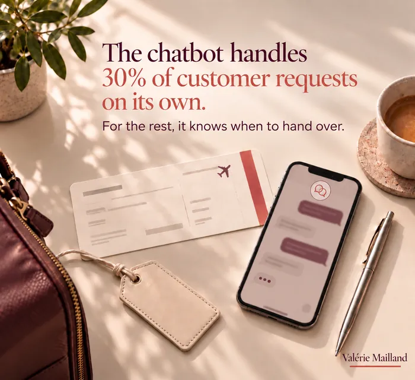

Air France’s chatbot answers
30% of requests alone.
For the rest, it knows
when to hand over.
Short version →
Louis, Air France’s AI assistant, handles 30% of customer requests fully autonomously and passes the rest to a human, without the customer having to start over.
The figure says less about AI progress than about the boundary Air France has learned to draw.
Three signals help sense the limit before crossing it, and recognising the right moment to hand over remains a human reflex.

Louis, Air France’s AI assistant, merged several generations of specialised chatbots (baggage, travel inspiration, strikes and delays) into a single assistant, active on WhatsApp and Messenger.
🤝 What does that 30% figure really say?
Today, Louis handles 30% of customer requests fully autonomously. The rest goes to a human, without the customer having to ask everything again.
The figure says something important: it is not the AI that progressed the most. It is the boundary Air France learned to draw.
This is not an isolated case : Salesforce estimates that in 2025, service teams already hand over an average of 30% of cases to AI, a share they expect to reach 50% by 2027.
Automating a frequent request frees up time.
Knowing how to route the rest is the real skill.
Why does the handover matter as much as the automation?
Because customers do not judge the technology, they judge the journey. A successful automation on 30% of requests can be cancelled by a single failed handover, the one where the customer has to repeat everything to an adviser who knows nothing about the previous exchange.
A good handover passes on the context: what the customer asked, what the tool replied, what remains to be solved. The adviser picks up the conversation where it stopped.
Which requests should never be automated end to end?
Those where the stakes are high or the emotion strong: a dispute, an emergency, a customer in difficulty, a decision that commits the company.
The volume of these requests is often low, but their effect on trust is disproportionate.
For these cases, the best automation is the one that spots the situation and alerts a human quickly.
What should you take from the Air France example?
That the result does not come from the sophistication of the tool, but from the clarity of how roles are shared.
The assistant handles what is frequent and simple. People handle what requires judgement, listening or a decision.
This split is not final: it is revised as the tool improves and teams learn what it does well.
What can be automated without risk?
Frequent, factual requests with a stable answer: the status of an order, a timetable, a known rule, a document to find.
These are questions whose right answer depends neither on the customer’s mood nor on a judgement call.
That is where automation frees the most time for teams, and also where a mistake costs the least.
How does a customer experience a failed handover?
As an admission: the company did not organise itself for them.
They repeat their problem, wait, switch channel, then keep a memory of the episode stronger than that of all the successful answers.
Trust is rarely lost on an isolated mistake. It is lost on the feeling of not being heard, especially when the request is urgent.
How do you sense the limit before crossing it?
Three signals help spot it.
Does the customer repeat the question before getting a useful answer?
When the same question keeps coming back, the tool is not meeting the real need. It is the first signal that the conversation should change hands.
Is there a simple option to reach a human?
If no clear option appears, customers feel trapped. Good automation makes the way out to a human contact visible and immediate.
Does the tone adapt to how serious the request is?
The tone cannot stay the same whether the request is trivial or urgent: a staff strike does not call for the same register as a baggage question. AI handles the volume. Recognising the right moment to hand over to a human remains a human reflex.
Who decides the limit between the tool and the person?
A named person, not a technical setting. The limit is a service decision: which requests the assistant handles alone, which it passes on, and on which signals. It needs an owner, must be written down and reviewed.
Without an owner, the limit drifts by default, with each update, without anyone having chosen it.
How do you know the limit is in the right place?
By listening to two sources:
- customers, through their feedback and repeated requests, and
- advisers, who see what reaches them after the handover.
If advisers often receive misunderstood requests, the tool keeps control too long.
If they receive simple requests, it hands over too early.
The percentage of requests handled alone is a result to read with care: it matters less than the satisfaction of those who went through the tool.
Where do you start in your customer service?
With the most frequent and simplest requests: that is where automation frees the most time with the least risk.
In parallel, define from the outset the signals that trigger a move to a person, and check that this move is visible and quick.
Then widen gradually, always keeping the same rule:
- the tool handles the volume,
- the person handles what matters.
Which question should you ask your teams?
Just one: in which cases did your customer feel they were talking to someone who did not understand them? The answers almost always draw the boundary the organisation has not yet drawn.
That is where the quality of the relationship is decided, far more than in the percentage of requests handled.
What should be passed on to the person taking over?
The full context: the initial request, the answers already given, the information the customer has already provided and the exact point where the exchange stalled.
The person should be able to reply without asking a single question already asked.
This summary is prepared in advance, with the teams who receive the requests, and tested regularly on real cases.
How do you involve frontline teams?
By giving them a voice on the boundary. Advisers know which requests recur, which get complicated and which are better handled in person. Their view avoids moving the limit blindly.
A regular review of a few real exchanges, with them, is enough to spot useful adjustments.
Which indicator should you follow first?
Less the share of requests handled alone than the satisfaction of those who went through the tool, and the time it takes to reach a person when they want one.
A high automation rate can hide real frustration.
The right goal is not to make human exchanges disappear but to reserve them for the moments where they matter most.
How do you test the set-up before rolling it out?
By replaying real requests, including the most delicate: a complaint, an emergency, a badly worded question. Observe at what point the tool should have handed over, and what the person receives at that moment.
A test of a few dozen exchanges, reviewed by advisers, teaches more than a successful demonstration on three carefully chosen cases.
What should you tell the customer so they trust the tool?
The truth, simply: they are talking to an assistant, here is what it can do, and here is how to reach a person. An informed customer accepts the tool’s limits better than one who discovers, halfway through, that they are not dealing with a human.
Transparency is also a courtesy: it shows the company stands behind what it has put in place.
How do you prepare advisers to take over?
By teaching them to pick up without repeating questions already asked, and to recognise the tone of an already weary customer. Taking over a conversation is a professional skill in its own right, worth a short training.
Advisers must also know when to tell the team that a reason for handover keeps coming back, so the boundary can be adjusted.
How do you keep control as the tool evolves?
By treating each change as a boundary to decide, not as a technical update. Before widening the assistant’s scope, the question is simple: which new requests will the assistant handle alone, and who checks that this stays acceptable for the customer?
A regular review of a few real exchanges, at each change, protects the quality of the relationship.
💬 In your customer service,
where do you draw this limit?
Sources: Usine Digitale, L’Écho touristique (2024-2025); Salesforce, 7th "State of Service" report, survey of 6,500 service professionals (Salesforce News, November 2025).
Read the full articleabout 3,000 words
Does an SME need a conversational assistant?
Not always. Before installing a tool, one simple question helps decide: how many identical requests does your team receive each week?
If they number in the dozens, a well-built FAQ page, an automatic email reply and a booking link often cover the essentials, at a much lower cost. A conversational assistant becomes relevant when the volume of repetitive requests genuinely takes up part of the team’s time.
How much does a badly set-up assistant cost?
More than it seems, because the cost appears on no invoice. Clients who give up without saying so, advisers who take over badly started conversations, a brand image that suffers in online reviews.
These costs only appear if you look for them: by regularly reading a few real conversations, tracking client reviews and asking the advisers. One hour a month spent on this reading often prevents months of silent decline.
How do you choose a vendor?
Beyond the demo, six criteria often separate the offers:
does the tool answer only from sources you control?
does the handover to a person pass on the full context?
does the tool integrate with your existing software, notably customer relationship management?
where is the data hosted, and how long is it kept?
can the conversation history be reviewed easily?
can someone without technical skills update the information?
A vague answer to any of these questions weighs more than a spectacular feature.
The quality of answers depends on what you give it
An assistant only knows what it has been given. If prices, lead times or conditions change without its knowledge base being updated, it confidently gives… outdated information.
You therefore need a content owner, separate from the technical owner. Their job: keep the information the tool uses up to date, and check with every rule change that the assistant takes it into account.
What should happen when the tool does not know?
It should say so. A well-configured assistant answers only from sources validated by the company, and acknowledges its limits when a question falls outside that scope.
An invented answer, even a plausible one, costs more than “I do not know, let me put you in touch with someone”. The instruction deserves to be written down explicitly during set-up, and tested with trick questions.
What the AI Act changes for assistants
From 2 August 2026, the European AI regulation imposes a transparency obligation: people interacting with an AI system must be informed of it, unless this is obvious from the context.
For a company, compliance is simple: a clear message at the start of the exchange stating that the client is talking to an assistant and how to reach a person. As we have seen, this is also what builds trust.
Personal data in conversations
Clients often share more than you might think: a file number, an address, sometimes health or family information. These exchanges fall under the GDPR.
Three precautions are needed:
keep conversations only as long as necessary, with a retention period set in advance;
check where the vendor hosts the data and what it does with it;
never ask the client for more information than the request requires.
One service across every channel
Website, email, a messaging app such as WhatsApp, phone: clients move from one to another without thinking. If they get a different answer depending on the channel, they lose trust in all of them.
The same information, the same rules for handing over to a person and the same tone must apply everywhere. This is often where the Air France example is most instructive: a single assistant, rather than a collection of tools that contradict each other.
What about nights and weekends?
An assistant answers at any hour; teams do not. The point is not to hide this, but to organise what comes next.
When nobody is available, the tool can collect the request, summarise the key points and announce a realistic callback time. A client who knows they will be called back tomorrow at ten waits calmly; one going round in circles in a conversation with no way out does not.
The advisers’ job changes
This effect is often forgotten. When the assistant handles simple requests, advisers only receive the difficult cases: complaints, emergencies, clients who are already annoyed.
Their day becomes more demanding, emotionally and intellectually. This must be taken into account: training in handling tense situations, recovery time between two difficult exchanges, recognition of this new expertise. Otherwise, automation shifts fatigue instead of reducing it.
Two more indicators to watch
Beyond satisfaction, two measures quickly signal a problem:
the recontact rate, meaning the share of clients who come back with the same request in the following days;
satisfaction measured right after a handover to a person.
A rising recontact rate points to incomplete answers. Low satisfaction after handover points to a poorly prepared transfer. Both can be fixed, provided you look at them.
What about public complaints on social media?
They call for a separate rule. An unhappy public message is read by hundreds of people: a clumsy automatic reply quickly turns it into a controversy.
Good practice: a first human reply, short and personal, offering to continue in private. AI can help spot these messages and prepare a draft, but the public reply carries the company’s signature. It must therefore go through a person, every time.
What about requests in several languages?
Current tools understand and reply in many languages, opening the service to foreign clients without hiring.
Caution is needed on binding topics, however: a nuance mistranslated in a refund condition can create a dispute. In those cases, handing over to a person who masters the language remains the rule.
Should the assistant have a first name?
Air France called its assistant Louis. A first name makes the exchange warmer and gives the service an identity. It must not, however, suggest that the client is talking to a person.
The right balance fits in one welcome sentence: a first name, a clear statement that it is an assistant, and a way to reach someone. Warmth does not exclude transparency; it makes it easier to accept.
A typical example
Take a service SME that receives around a hundred questions a week about its opening hours, lead times and file tracking. It entrusts these three topics to an assistant, fed by a knowledge base kept up to date by a designated person.
Everything else, complaints, quotes, special cases, goes to the team with a summary of the exchange. After three months, the team has regained several hours a week, the recontact rate is stable and clients know, from the first message, that they can reach a person.
What the Air France example really teaches
An assistant’s success is measured at the moment it steps aside. Answering part of the requests alone is useful; knowing how to recognise the moment when a person must take over is what makes the difference.
It is a service decision as much as a technical setting. It belongs to leadership, because it shapes the relationship with every client.